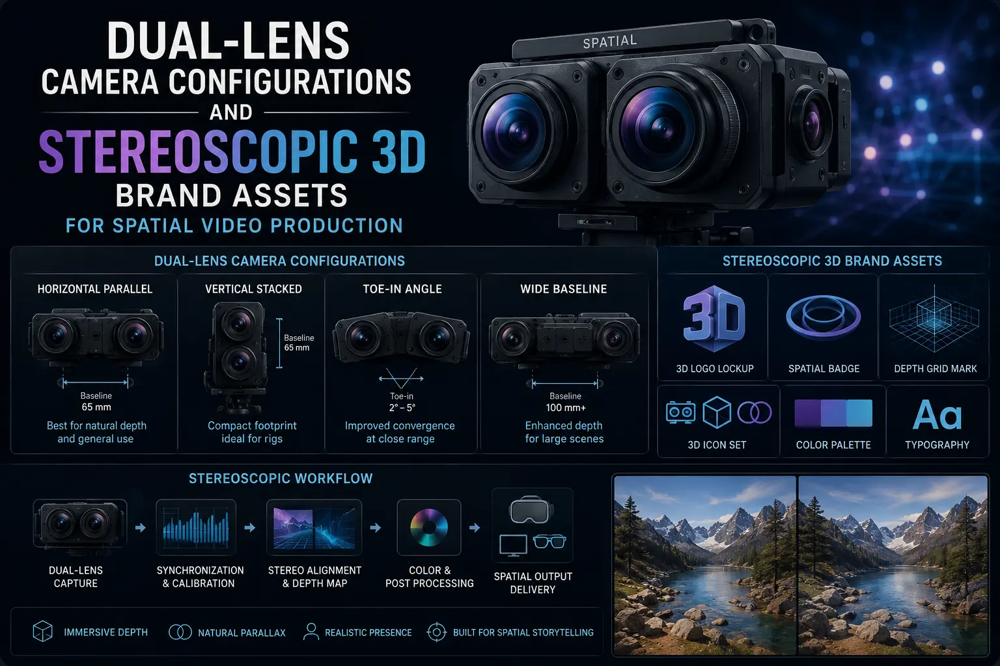
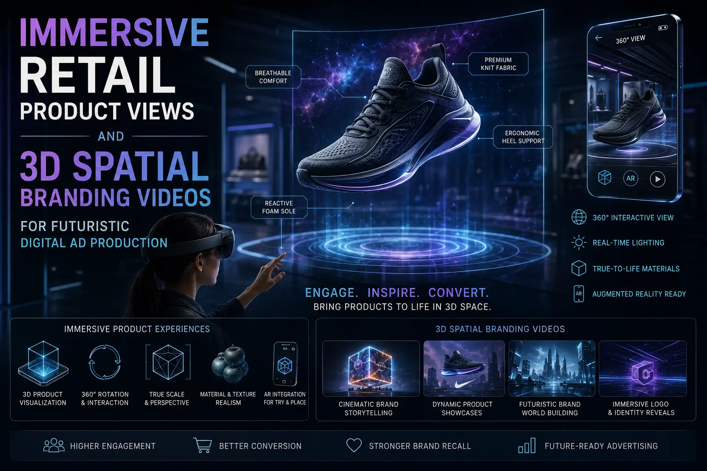

The Fundamentals of Spatial Video Production for Mixed-Reality Environments
Why Flat Video Is No Longer Sufficient for Forward-Looking Brands
Every piece of brand video content produced today exists on a flat plane — a rectangle of light projected onto a flat screen, presenting a two-dimensional compression of a three-dimensional world. For nearly a century, this compression was the only available format, and audiences accepted it as the natural state of video. That era is ending.
The arrival of commercially viable mixed-reality headsets — Apple Vision Pro, Meta Quest 3, and the generation of spatial computing devices that will follow — has introduced a new category of video content that does not flatten the world into a rectangle but preserves its spatial depth, allowing the viewer to perceive scenes with genuine three-dimensional volume. Products occupy space. Environments surround the viewer. The perceptual experience shifts from watching content on a screen to being present within the content itself.
Spatial video production — the capture, processing, and delivery of video content that preserves stereoscopic depth for mixed-reality playback — is not a distant future technology. It is a current production discipline with defined camera systems, established post-production workflows, and a growing installed base of consumer devices capable of playing the content. Brands that begin producing spatial commerce ready content now are not speculating on a future platform — they are building assets for a platform that already exists and is scaling rapidly.
The Science of Spatial Perception: How Stereoscopic Video Works
Understanding the technical foundation of spatial video production begins with understanding how human spatial perception works — because spatial video is, at its core, a technology designed to replicate the specific perceptual mechanism that gives humans their sense of three-dimensional depth.
The perceptual science behind spatial video:
- Binocular disparity: the foundation of depth perception. Human depth perception relies primarily on binocular disparity — the slight difference between the images received by the left eye and the right eye, caused by their horizontal separation of approximately 63mm. The brain computes depth from these two slightly different perspectives: objects closer to the viewer produce greater disparity between the two images, while objects farther away produce less disparity. Stereoscopic 3D brand assets replicate this mechanism by capturing two perspectives of the same scene at a matching horizontal separation and presenting each perspective to the corresponding eye through a stereoscopic display — allowing the viewer's brain to compute genuine depth from the captured disparity, producing a perception of three-dimensional space that is neurologically identical to the depth perception experienced when viewing the real world.
- Vergence and accommodation: the depth comfort challenge. In natural vision, the eyes converge (rotate inward) to focus on near objects and diverge for distant objects, while the lenses simultaneously adjust focus (accommodate) to the same distance. In stereoscopic display, the eyes converge correctly based on the displayed disparity, but the lenses accommodate to the fixed distance of the display surface — creating a vergence-accommodation conflict that can cause visual discomfort if the stereoscopic depth is not carefully managed. Professional spatial video production manages this conflict through careful control of depth budgets — limiting the range of stereoscopic depth to comfortable perceptual limits — and through post-production depth grading that ensures no elements in the scene exceed the viewer's comfortable depth range.
- Spatial audio integration: completing the volumetric experience. Spatial video without spatial audio is a partial experience — the viewer perceives visual depth but hears sound from a flat, directionless plane, creating a sensory mismatch that reduces immersion. Complete immersive media innovations integrate spatial audio — sound that is positioned in three-dimensional space, matching the visual position of its source — with the stereoscopic video, producing a fully volumetric audiovisual experience where both senses receive coherent spatial information. For product content, this means the sound of a product mechanism, a surface interaction, or a voice narration is perceived as emanating from the correct position in three-dimensional space relative to the viewer.
True Product Scale Perception
Spatial video communicates the actual physical scale of a product with a fidelity that flat video cannot approach. The viewer perceives the product's real size, proportions, and physical relationship to its environment — eliminating the scale ambiguity that causes mismatched expectations in flat-video e-commerce.
Material and Surface Depth
Stereoscopic depth reveals the three-dimensional surface character of materials — the raised grain of wood, the woven depth of fabric, the sculptural facets of cut glass — with a physical presence that flat photography and flat video flatten into two-dimensional texture. The viewer perceives material depth, not just material pattern.
Spatial Brand Environments
Spatial video allows brands to place their products within three-dimensional environments that the viewer perceives as surrounding spaces rather than background images — creating immersive brand worlds that the viewer inhabits rather than observes, producing deeper emotional engagement and stronger brand memory.
First-Mover Competitive Advantage
Brands producing spatial content now establish expertise, asset libraries, and platform presence before their competitors — positioning themselves as the premium, forward-looking choice in their category when spatial computing reaches mainstream adoption. The production knowledge gained now compounds in value as the platform scales.

Dual-Lens Camera Configurations: The Capture Hardware
Dual-lens camera configurations for spatial video range from consumer- accessible smartphone capture to professional cinema-grade stereoscopic rigs — each offering different levels of quality, control, and production capability. The choice of configuration depends on the intended use case, the required quality level, and the production budget.
The primary camera configurations for spatial video production:
- Smartphone spatial capture (iPhone 15 Pro and later). Apple's integration of spatial video capture into the iPhone — using the device's dual camera system to record in MV-HEVC (Multi-View High Efficiency Video Coding) format — has made spatial video capture accessible to any production team with a current iPhone. The captured footage plays natively on Apple Vision Pro with genuine stereoscopic depth. While smartphone spatial capture is limited by fixed interaxial distance, fixed lens characteristics, and smartphone sensor quality, it provides a viable entry point for brands beginning to build spatial content libraries — and for behind-the-scenes, social media, and casual brand content where the accessibility of the format outweighs the quality limitations.
- Purpose-built spatial cameras. Dedicated spatial video cameras — such as the Canon EOS R7 with its dedicated spatial lens adapter, the Blackmagic URSA Cine Immersive, and emerging purpose-built spatial cinema cameras — integrate dual sensors and dual optical paths into a single camera body with factory-calibrated alignment, matched sensor characteristics, and hardware-level synchronisation. These cameras provide cinema-quality spatial capture with the operational simplicity of a single-camera workflow — the camera operator works with one device rather than managing a paired rig. For 3D spatial branding videos requiring professional-grade quality with efficient production workflows, purpose-built spatial cameras represent the optimal balance of quality and production practicality.
- Paired cinema camera stereoscopic rigs. The highest-quality spatial video capture uses two matched cinema cameras (RED V-Raptor, ARRI Alexa Mini LF, Sony Venice 2) mounted on precision-engineered stereoscopic rigs that provide adjustable interaxial distance (the separation between the two lens centres), adjustable convergence angle (the angle at which the two lens axes converge), and mechanical precision that maintains calibrated alignment throughout the shoot. This configuration provides maximum creative control — the stereographer can adjust the depth characteristics of the captured footage by modifying the interaxial distance and convergence in real time — and maximum image quality from large-format cinema sensors. For futuristic digital ad production and premium brand campaigns where visual quality and depth control are paramount, paired cinema camera rigs are the professional standard.
- Volumetric capture systems. Beyond stereoscopic video, volumetric capture systems — using arrays of dozens or hundreds of cameras surrounding the subject — capture full 3D geometry that can be viewed from any angle, not just the captured camera position. While volumetric capture is currently limited to specialised studio environments and represents the highest production cost and complexity, it produces the most immersive spatial content available — content where the viewer can move around the captured subject and view it from any perspective. For brands producing the most advanced immersive media innovations, volumetric capture represents the frontier of spatial content production.
Stereoscopic 3D Brand Assets: The Production Workflow
Producing stereoscopic 3D brand assets requires a production workflow that extends the standard video production pipeline with specialised stages for stereoscopic capture management, depth quality control, and spatial post-production processing.
The complete production workflow for stereoscopic brand content:
- Pre-production: depth planning and stereo storyboarding. Spatial video pre-production adds a critical dimension to standard storyboarding: depth planning. Each shot in the storyboard is annotated with its intended depth characteristics — which elements of the scene should appear closest to the viewer, which should occupy the middle depth plane, and which should recede into the background. This depth plan determines the interaxial distance and convergence settings for each shot and ensures that the stereoscopic depth serves the narrative and commercial objectives of the content rather than being applied arbitrarily. For advanced commercial media layouts, depth planning is as important as compositional planning — because depth is a compositional dimension that flat video does not possess.
- Capture: stereoscopic camera operation and depth management. During the shoot, the stereographer (the specialist responsible for stereoscopic depth quality) manages the dual-lens camera configurations in real time — adjusting interaxial distance and convergence for each shot according to the depth plan, monitoring the captured stereoscopic depth on a 3D preview display to ensure comfortable depth ranges, and coordinating with the director of photography to ensure that standard cinematographic decisions (focal length, aperture, camera movement) are compatible with stereoscopic requirements. Spatial video capture also requires specific lighting considerations: lens flare, specular reflections, and transparent objects behave differently in stereoscopic capture and require specific management to avoid depth conflicts.
- Post-production: stereo alignment, depth grading, and encoding. Spatial video post-production includes several stages that do not exist in flat video workflows: stereo alignment verification (ensuring the left and right views are geometrically matched with sub-pixel precision), depth grading (adjusting the perceived depth of elements within the scene for comfort and narrative emphasis, analogous to colour grading for visual tone), floating window management (controlling how the stereoscopic image relates to the edges of the display window to prevent depth violations), and spatial audio mixing (positioning audio elements in three-dimensional space to match their visual positions). The final output is encoded in a spatial video format — typically MV-HEVC for Apple platforms or side-by-side/over-under stereoscopic formats for other platforms — that preserves the stereoscopic depth information for playback on spatial computing devices.
- Quality assurance: comfort testing on target devices. The final stage of spatial video production is quality assurance testing on the target playback devices — viewing the complete content on Apple Vision Pro, Meta Quest, or other intended platforms to verify that the stereoscopic depth is comfortable across the full duration, that no depth conflicts or alignment errors cause visual discomfort, and that the spatial audio integration produces a coherent volumetric experience. This device-specific QA is essential because stereoscopic comfort is subjective and display-dependent — content that appears comfortable on a post-production monitor may present differently on the curved optics of a mixed-reality headset.
Immersive Retail Product Views: The Commercial Application
Immersive retail product views represent the most immediately commercial application of spatial video production — using stereoscopic 3D content to replicate the spatial experience of examining a product in a physical store, delivered through mixed-reality headsets to customers anywhere in the world.
The specific commercial applications of immersive spatial product content:
Luxury and Fashion
- Spatial product showcases that communicate the three-dimensional form, drape, and material depth of garments and accessories
- Virtual fitting rooms where the spatial video demonstrates how products look and move on the human body with genuine depth perception
- Craftsmanship close-ups that reveal the depth and detail of hand-finishing, stitching, and material quality in stereoscopic detail
- Collection presentations in spatially designed virtual showroom environments that replicate the premium retail experience
Real Estate and Architecture
- Property walkthroughs with genuine spatial depth that communicate room dimensions, ceiling heights, and spatial flow
- Interior design visualisation where furnishings and finishes are perceived with accurate scale and spatial relationship
- Construction progress documentation in stereoscopic format for remote stakeholder review with genuine depth perception
- Architectural detail capture that communicates the three-dimensional character of materials, mouldings, and design elements
Consumer Electronics and Automotive
- Product demonstrations that communicate the three-dimensional design, material quality, and physical scale of devices and vehicles
- Interior experiences that place the viewer inside a vehicle or device environment with genuine spatial perception
- Feature demonstrations where mechanical interactions and interface elements are perceived with depth and spatial accuracy
- Unboxing and setup content that communicates product scale, packaging quality, and physical interaction in stereoscopic depth
3D Spatial Branding Videos: Building the Brand World
3D spatial branding videos extend the commercial product application into the broader territory of brand storytelling — using spatial video to create immersive brand environments, experiential narratives, and volumetric brand moments that the viewer inhabits rather than watches.
The creative approaches to spatial brand content:
- Spatial brand environments. A spatial brand video can place the viewer inside a designed brand environment — a virtual space that embodies the brand's aesthetic identity, material palette, and experiential values — creating an immersive brand experience that functions as a three-dimensional extension of the brand's visual identity. The viewer does not see the brand world on a screen; they are inside it. This experiential depth produces brand memory and emotional connection at a level that flat video, regardless of its production quality, cannot approach.
- Product origin and craft narratives in spatial depth. Brand storytelling content that shows the origin and creation of products — the workshop, the materials, the craft process — gains extraordinary communicative power in spatial video. The viewer perceives the depth of the workshop space, the three- dimensional character of the raw materials, the physical presence of the artisan at work — and this spatial presence transforms a brand story from a narrative observed at a distance into an experience of being present at the place where the product is born. For futuristic digital ad production that aims to build deep brand trust and emotional connection, spatial craft narratives are among the most commercially powerful content formats available.
- Event and experiential documentation. Brand events, launch experiences, and experiential activations captured in spatial video become re-experienceable — the viewer who was not present at the event can experience it with genuine spatial presence, perceiving the environment, the atmosphere, and the scale of the experience with a fidelity that flat event documentation cannot deliver. For brands that invest in physical experiences as part of their marketing strategy, spatial documentation extends the reach of those experiences to audiences who could not attend in person.
- Spatial advertising: the immersive ad format. As mixed-reality platforms develop their advertising ecosystems, spatial video ads — stereoscopic commercial content that plays within the viewer's spatial computing environment with genuine depth — will become a distinct advertising format with specific production requirements and creative conventions. Brands that develop spatial ad production capabilities now will be prepared to deploy on these platforms as they scale, with production expertise that competitors will need to build from scratch. Advanced commercial media layouts for spatial advertising require rethinking compositional conventions designed for flat rectangles and developing new compositional approaches that use depth as an active creative dimension.

Futuristic Digital Ad Production: Preparing for the Spatial Era
Futuristic digital ad production for the spatial computing era requires brands to rethink their production processes, creative approaches, and asset management strategies to accommodate the unique requirements and opportunities of three-dimensional content.
The strategic preparation for spatial-era ad production:
- Hybrid production workflows: flat and spatial from one shoot. The most efficient approach to building spatial content libraries is to integrate spatial capture into existing flat video production workflows — capturing both the standard flat footage for current platforms and stereoscopic footage for spatial platforms from the same production session. This hybrid approach maximises the return on production investment, avoids the cost of separate spatial-only shoots, and ensures that the brand's spatial content maintains visual consistency with its flat content across all platforms.
- Depth as a creative tool, not a technical gimmick. The most common error in early spatial video production is treating depth as a novelty — pushing objects toward the viewer, creating exaggerated depth effects, and using the stereoscopic dimension for spectacle rather than communication. The most effective 3D spatial branding videos use depth the same way excellent flat cinematography uses composition — as a tool for directing attention, creating emotional tone, and supporting the narrative. Subtle, naturalistic depth that mirrors the viewer's real-world spatial perception is more commercially effective than aggressive depth effects that draw attention to the medium rather than the message.
- Spatial asset management and future-proofing. Spatial video assets captured today should be archived in the highest possible quality and in platform-agnostic formats — ensuring that as new spatial computing platforms emerge and existing platforms evolve, the brand's spatial content library can be re-encoded and redeployed without re-shooting. This future-proofing approach treats spatial content as a long-term brand asset rather than a single-use deliverable — the same footage that serves Apple Vision Pro today may serve next-generation spatial platforms for years to come.
- Team capability development. Spatial video production requires specific skills that extend beyond standard video production expertise — stereography (the science and art of managing stereoscopic depth), spatial audio production, depth-aware post-production, and platform-specific encoding and quality assurance. Brands and production agencies that invest in developing these capabilities now — through training, practice projects, and progressive integration into commercial work — build a competitive production advantage that will compound as spatial computing platforms reach mainstream adoption.
Advanced Commercial Media Layouts: Composing for Depth
Advanced commercial media layouts for spatial video require compositional thinking that adds depth as a third dimension to the traditional two-dimensional considerations of horizontal and vertical framing. The product, the environment, and the viewer's attention must be managed not just within the frame's width and height but within its depth — creating compositions that use the z-axis as an active creative element.
- Depth layering: foreground, mid-ground, background. Spatial compositions benefit from deliberate depth layering — placing visual elements at distinct depth planes that create a sense of spatial richness and visual depth. A product positioned in the mid-ground, with a subtle foreground element (a surface edge, a blurred environmental detail) and a background environment creates a three-plane depth composition that maximises the spatial impact of the stereoscopic capture.
- Depth-based attention direction. In spatial video, depth is a powerful attention-directing tool — the viewer's gaze is naturally drawn to the depth plane that is closest to them and the depth plane that is in sharpest focus. By positioning the product at the optimal attention depth and managing the depth placement of surrounding elements, the spatial video director controls the viewer's attention with a precision that flat video's two-dimensional composition cannot match.
- Comfortable depth range management. The usable depth range in spatial video — the range of stereoscopic depth that the viewer can comfortably perceive without visual strain — is not unlimited. Professional spatial compositions manage the depth budget carefully, keeping the most important visual elements within the comfortable depth range (typically corresponding to virtual distances between 1 metre and 10 metres from the viewer) and avoiding extreme near or far depth placements that cause vergence-accommodation discomfort.
- Spatial negative space: depth as emptiness. Just as negative space in flat photography creates visual calm and premium perception, depth-based negative space in spatial video — the deliberate creation of empty three-dimensional space around the product — creates a spatial luxury signal. A product floating in generous spatial depth, surrounded by volumetric emptiness, communicates premium positioning through the same psychological mechanism as flat negative space — but with the added dimension of genuine perceived distance between the product and its surroundings.
Spatial Commerce Ready: The Content Specification
Producing content that is spatial commerce ready means delivering assets that meet the technical specifications of current spatial computing platforms and can be immediately deployed without additional conversion or compromise.
The technical specifications for spatial commerce readiness:
- Apple Vision Pro (visionOS). MV-HEVC encoding at up to 4K resolution per eye, 30fps or 24fps, with spatial audio in object-based format. Content should be produced with Apple's recommended interaxial distance (approximately 64mm for natural-scale spatial video) and tested on Vision Pro hardware for stereoscopic comfort and spatial audio coherence.
- Meta Quest platform (Horizon OS). Side-by-side or over-under stereoscopic format in H.264 or H.265 encoding, with spatial audio in Ambisonics format. Content should be tested on Quest 3 or Quest Pro hardware for stereoscopic comfort and rendering performance.
- Web-based spatial playback. WebXR-compatible stereoscopic video formats for browser-based spatial playback on compatible headsets — providing platform-agnostic spatial content distribution without requiring platform-specific application development.
- Archive and future-proofing format. Source-quality stereoscopic footage archived in high-bitrate ProRes or DNxHR format with separate left and right eye streams, accompanied by multichannel spatial audio masters, for future re-encoding as new platforms and formats emerge.
Conclusion
Spatial video production, stereoscopic 3D brand assets, immersive media innovations, 3D spatial branding videos, and spatial commerce ready content are the production disciplines that prepare brands for the next fundamental shift in how audiences experience commercial media — the transition from flat screens to spatial computing environments where products possess genuine three-dimensional presence and brand worlds surround rather than face the viewer.
The strategic imperative is not speculative. The hardware exists. The platforms are live. The consumer audience is growing. Futuristic digital ad production is not futuristic — it is current production for current platforms with growing audiences. Brands that build dual-lens camera configurations expertise, immersive retail product views capabilities, and advanced commercial media layouts for spatial content now establish the first-mover advantage that defines market leaders when spatial computing reaches mainstream scale.
At The PhD Ads in Madurai, we produce spatial video production, stereoscopic 3D brand assets, and 3D spatial branding videos for forward-looking brands ready to claim their presence in the spatial computing era — professional-grade immersive content built for the platforms your audience is moving to.
Key Topics
Ready to Build Your Brand's Presence in the Spatial Computing Era?
At The PhD Ads in Madurai, we produce spatial video production, stereoscopic 3D brand assets, and 3D spatial branding videos for brands ready to move beyond flat screens — professional-grade immersive content built for mixed-reality platforms and spatial commerce environments.
Email: team@e2o.in